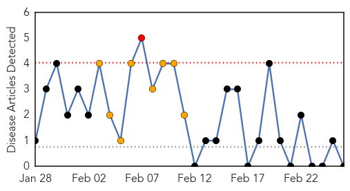
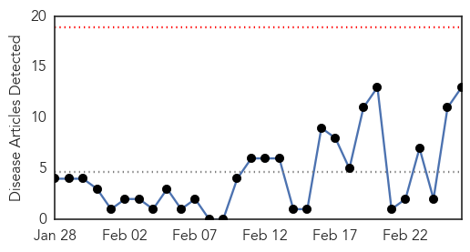
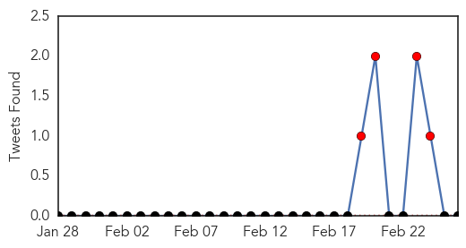
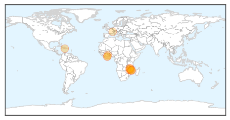
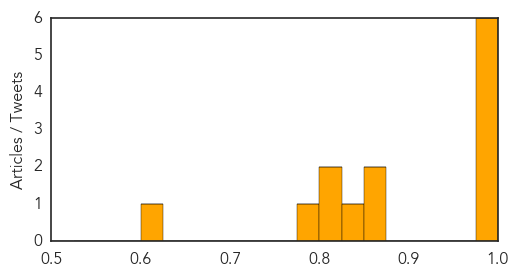

Pertussis
30-Day Web Trend
1 alerts, 8 warnings

30-Day Twitter Trend
0 alerts, 0 warnings

Article Locations

Article Confidences

Top Articles:
-
No articles found for Feb 26, 2015
Top Tweets:
-
No tweets found for Feb 26, 2015
Cholera
30-Day Web Trend
0 alerts, 0 warnings

30-Day Twitter Trend
8 alerts, 0 warnings

Article Locations
Article Confidences
Top Articles:
- 0.998
- Cholera outbreak challenges relief efforts in Malawi’s flood-affected communities
- 0.998
- Cholera outbreak challenges relief efforts in Malawi's flood-affected communities
- 0.997
- Mozambique, Malawi, Zimbabwe: Cholera Outbreak (25 Feb 2015) - Mozambique
- 0.996
- Cholera Outbreak Challenges Relief Efforts In Malawis Flood-Affected Communities
- 0.996
- Cholera outbreak challenges relief efforts in Malawi’s flood-affected communities - Malawi
- 0.990
- UN Cholera Plan for Haiti Must Choose Justice Over Charity
- 0.856
- Western Region complains about health insurance claims
- 0.856
- Preventing Disease and Further Tragedy for Malawi Flood Victims
- 0.842
- Stomach infection outbreak hits school in Ebonyi
- 0.803
- Is Health In Africa A Death Row?
- 0.801
- Healthcare delivery in Western Region threatened
- 0.791
- Takoradi : Healthcare delivery in Western Region threatened
- 0.604
- Malawi: Cholera outbreak challenges relief efforts in Malawi's flood-affected communities
Top Tweets:
-
No tweets found for Feb 26, 2015